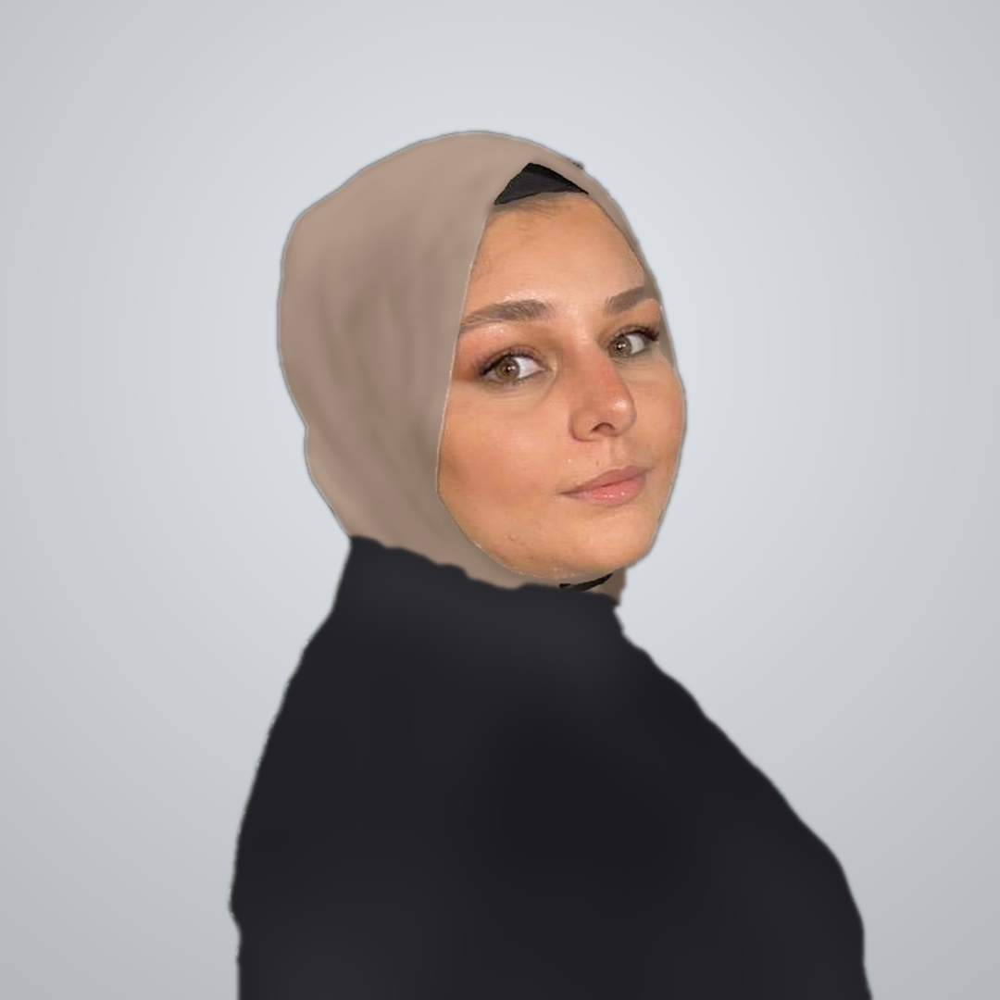

עיפאף עבדאלראזק

מידע כללי
אוהבת לפתור בעיות ולהבין איך דברים עובדים מאחורי הקלעים.
מה שמושך אותי בעולם הטכנולוגיה החיבור בין אנשים לטכנולוגיה:
לבנות מערכות שעוזרות למשתמשים ומקלות על החיים שלהם.
לומדת מהר, נהנית לעבוד בצוות, ותמיד מחפשת את האתגר הבא.
השכלה
תואר ראשון במערכות מידע אוניברסיטת בן גוריון בנגב
2023 – 2027
קורסים מרכזיים
- יסודות התכנות Java
- פיתוח תוכנה מונחה עצמים
- בסיסי נתונים
- יסודות האלגוריתמים והסיבוכיות
- ניתוח ועיצוב של מערכות מידע
- תשתיות טכנולוגיות מידע
- בניית מערכות מבוססות web
תעודת בגרות מלאה
2016 – 2019
- מגמות פיזיקה ומדעי המחשב (10 יחידות לימוד במדעי המחשב)
פרויקטים
פרויקט גמר: מפה חכמה לנגישות בקמפוס בן גוריון
- פיתוח מערכת ניווט נגיש לאנשים עם מוגבלות בתנועה, המציגה מסלולים ללא מדרגות ומתעדכנת בתקלות כמו מעלית מושבתת
מערכת להשאלת ציוד בין סטודנטים
- אפיון ופיתוח בצוות של מערכת WEB מלאה, הכוללת צד לקוח, שרת ובסיס נתונים שבה סטודנטים מפרסמים ציוד להשאלה ומבקשים לשאול.
- ניהול קוד ועבודה משותפת באמצעות GitHub
ניסיון תעסוקתי
נציגת תמיכה טכנית ב- HOT
- מתן מענה ותמיכה טכנית ללקוחות, אבחון תקלות ופתרונן
- עבודה בסביבה שירותית ודינמית, תוך שמירה על סבלנות ותקשורת ברורה מול לקוחות.
כישורים
שפות תכנות
- Java
- SQL
- HTML
- CSS
- C#
- JavaScript
כלים
שפות
- ערבית - שפת אם
- עברית - ברמת שפת אם
- אנגלית - טובה
אישיים
- יוזמה
- אחריות
- עבודת צוות
- יכולת למידה עצמית מהירה
Contact me
Hobbies